Decision Brief after Phase 3
Project: Identity-Preserving Adaptive Surveillance Restoration & Recognition Pipeline (Approach B)
Team: Muhammad Abser Mansoor (lead), Raghib Rizwan Rabbani, Muhammad Umar
Supervisor: Dr. Kamran Ali · Date: 20 October 2026
1. Summary
Phase 3 tested whether diffusion-based super-resolution (SR) improves face recognition on real surveillance crops. It does not, under the conditions we tested. We propose three decisions and ask for your approval.
- Close SR as a completed negative result. We will not start new SR models, including smaller ones. The claim we will make is deliberately narrow (section 4).
- Keep restoration in the pipeline as a gated stage that is off by default. We will run one cheap, one-week test of deblurring and low-light enhancement, using non-generative methods only.
- Make the working video system the main deliverable for the next 8 weeks: detection, alignment, recognition, retrieval, tracking, and identity matching per track. All of these are already in the proposal's scope (BoT-SORT, FAISS/HNSW, deliverable 1). This changes priorities, not the project.
Decision 2 and the start of decision 3 run in parallel in week 1. The video track needs about a week for dataset access, consent and setup. The restoration test runs on CPU in that time.
2. Work completed
We have built an evaluation pipeline and used it to answer the SR question. We have not built a restoration engine. All runs are inference-only, with fixed seeds and 1,000-draw bootstrap confidence intervals.
| Phase | Work | Main finding |
|---|
| 0 | Reconnaissance, LFW high-resolution control, post-mortem of the earlier baseline | The recognizers work at high resolution (LFW accuracy 0.9985). Missing face alignment explains most of the weak baseline. |
| 1 | Baseline: 4 recognizers (ArcFace, AdaFace, MagFace, CurricularFace) on QMUL-TinyFace and QMUL-SurvFace; aligned diagnostic arms | TinyFace Rank-1 is 24.5–27.5% with resize-only input and 67–70% with 5-point alignment, about +40 points. SurvFace stays hard even with alignment. |
| 2 | Stratification of all 413,965 crops by luminance and sharpness | The sharpness score mostly tracks crop size on SurvFace. We fixed this with a size-controlled low-sharpness bin. |
| 3 | InvSR, TADSR and OSDFace against bicubic and Real-ESRGAN baselines; tuning/eval split with a rule fixed in advance; seed study; probes-only, per-bin and LFW identity checks | A negative result (section 3). |
Status of the proposal objectives:
- Objective 3 (recognition ablations): done for four recognizers. PartialFC is not done.
- Objective 4 (identity-aware metrics): done. We report embedding drift, impostor shift, d′ and paired confidence intervals.
- Objective 5 (QMUL benchmarks): done for SR.
- Objective 1 (quality-gated restoration): SR is answered. Deblurring, low-light enhancement and the gate are not done.
- Objective 2 (detector comparison) is not done. Neither are the video pipeline, retrieval index, tracking or demo.
3. Phase 3 result: SR does not help recognition
Evaluation subset: 22,898 crops (TinyFace 800 identities with 4,000 distractors; SurvFace 200 identities). ArcFace is excluded from OSDFace conclusions because OSDFace is trained with an ArcFace identity loss. The numbers below are for AdaFace, MagFace and CurricularFace.
| Check | Result |
|---|
| Probe and gallery both restored (TinyFace Rank-1, paired change against direct feed) | OSDFace is the only arm that improves all three: +0.073 [0.049, 0.097], +0.026 [0.003, 0.048], +0.085 [0.061, 0.110]. TADSR is marginal: +0.031 (AdaFace), +0.024 (CurricularFace), −0.005 (MagFace). InvSR is worse for every recognizer (−0.080 to −0.133). Real-ESRGAN gives no gain and hurts MagFace (−0.048). Bicubic matches direct feed. |
| Probes restored, gallery untouched (the realistic deployment case) | Every arm is worse than direct feed. OSDFace −0.057 to −0.099, InvSR −0.118 to −0.183, Real-ESRGAN −0.084 to −0.148, TADSR −0.023 to −0.043. |
| Identity preservation | Embedding cosine to the unrestored crop is 0.37–0.46 for OSDFace and 0.946–0.975 for bicubic. OSDFace's worst cases are 12–25 px blurs turned into confident faces of a different person. |
| Worst crops (size-controlled lowest 20% sharpness) | The OSDFace gain is smaller there. For two of the three recognizers its CI includes zero. |
| LFW at 10 px against a sharp gallery (a test of identity recovery) | No arm beats plain bicubic. OSDFace minus bicubic: AdaFace −0.049 [−0.059, −0.039], MagFace −0.007, CurricularFace +0.003. TADSR is within 0.014 of bicubic. InvSR and Real-ESRGAN are 0.12–0.20 AUC below bicubic. |
Sample images are in Appendix A. For scale: face alignment alone adds about +40 Rank-1 points on TinyFace (Phase 1). The best restoration gain is +8.5 points, and it appears only when probe and gallery are restored the same way.
4. Proposed closing statement for SR
The proposal asked whether diffusion restoration improves surveillance recognition while preserving identity. A negative answer is a valid answer to that question. We propose to state it as follows:
Off-the-shelf one-step and few-step generative SR (InvSR, TADSR and OSDFace, with Real-ESRGAN as a GAN baseline), used inference-only on resize-only crops, did not improve recognition when only probes were restored. On a controlled 10 px LFW check, no arm beat bicubic interpolation. The only gain required restoring probe and gallery identically, and it came with large identity drift.
What we will not claim:
- That SR cannot help low-resolution face recognition. We did not test SR trained for this task or with an identity loss.
- Anything about aligned crops. Every SR arm ran on resize-only crops, so this is a stated limitation.
- That the LFW check proves hallucination. Clean downsampling is not real CCTV degradation.
This agrees with a recent finding from Idiap (IJCB 2026, arXiv 2608.06580): learned SR pipelines did not beat direct feed on TinyFace. We recorded this in our Sprint 1 notes from a secondary summary and will verify the figures against the paper before citing them.
5. Why we will not try smaller SR models
- We have already tested a small, single-pass model: Real-ESRGAN. It gave no gain and hurt two recognizers.
- On LFW at 10 px no arm beat bicubic. This suggests the limit is the information left in a 10–25 px face, not the size of the model.
- A small model that fits 16×20 px crops would need training. That needs paired real low/high-resolution faces, which we do not have, and a GPU budget we do not have. Training it with an identity loss would also risk leakage into the recognizers we evaluate with.
- The main reason is the evidence, not the VRAM limit. The VRAM limit only adds to it.
6. Deblurring and low-light: what the SR results tell us
- Generative restoration invents detail on tiny faces. We will not run diffusion deblurring or diffusion low-light models (LightenDiffusion, QuadPrior, Diff-Retinex++). They would repeat Phase 3 at a higher cost, with the same hallucination risk.
- Blur and resolution cannot be separated at this size. Phase 2 showed that the sharpness score mostly tracks crop size, and Phase 3 gains were smaller on the least sharp crops. We expect deblurring to show no effect.
- Low-light enhancement is the better candidate. It adjusts pixel values photometrically and does not create facial structure. Caveat: the darkest-10% TinyFace bin has only 98 probes, so statistical power is low.
One-week test (Raghib, CPU, week 1):
- Low-light: gamma correction, CLAHE on the L channel, and Zero-DCE++.
- Deblurring: unsharp mask and one NAFNet (GoPro) checkpoint.
- Evaluation: the existing Phase 3 code, unchanged. We run both-sides and probes-only scoring, the per-bin breakdown, and the LFW check, with the decision rule fixed in advance.
- Stop rule: if no method gives a probes-only gain with a CI above zero, we close the restoration engine and report that. Otherwise the best method becomes the optional gated stage.
7. Video recognition and tracking as the main deliverable
Why
- The project has rigorous benchmarks but no working system yet. A demonstrable pipeline is the lowest-risk deliverable in the time left.
- Tracking is a non-generative replacement for restoration. Combining embeddings over the many frames of one track uses real information, where SR invents it. This follows directly from the negative SR result.
- The proposal listed tracking as a lower-priority objective only because restoration was the main contribution. Now that the restoration question is answered, promoting tracking is a re-prioritisation inside the approved scope.
Pipeline
SCRFD or RetinaFace detection → 5-point alignment (existing code) → AdaFace embedding (MagFace norm as quality weight) → ByteTrack or BoT-SORT → per-track embedding aggregation → FAISS index match → optional restoration stage, off by default.
Experiments (new results for the thesis)
- Single-frame versus track-aggregated identification (Rank-1 and TAR@FAR).
- Aggregation rule: mean, quality-weighted, and top-k by quality.
- Restoration gate on versus off, using the best method from section 6. This closes Objective 1.
- Throughput (FPS at 720p) on the lab PC.
Data and risks
- Video with identity labels. QMUL datasets are still images. In week 1 we will request or check access for IJB-S (surveillance video with high-resolution enrolment; licence needed), SCface (request form), ChokePoint (CCTV-style video) and YouTube Faces. If none arrives in time, we will measure track aggregation on the public set we can get. Our own campus clips, recorded with written consent, will be used for the demo only, not for reported metrics.
- Detecting tiny faces. SCRFD found only 31% of the TinyFace distractors (median 18×14 px). We will report detection rate by face size. SFE-DETR's code is unverified; if it is unavailable we compare SCRFD and RetinaFace only.
- Lab PC stability. The PC has had repeated unexpected reboots and power cuts. Long runs will be resumable, or moved to Colab.
8. Eight-week plan
| Weeks | Abser (integration) | Raghib (restoration) | Umar (detection and recognition) |
|---|
| 1 | Video data access requests; consent forms for own clips; pipeline skeleton | Low-light and deblur test (section 6) | Detector comparison on TinyFace and SurvFace |
| 2–3 | Tracker integration (ByteTrack / BoT-SORT) | Test write-up; Phase 3 thesis chapter | FAISS index, enrolment, AdaFace and MagFace wiring |
| 4–5 | Track aggregation experiments | Gated restoration stage (default off) | Video evaluation protocol and metrics |
| 6–7 | End-to-end runs, FPS | Results tables | Ablations |
| 8 | Demo, report and presentation (all members) |
9. What we ask of you
- Approve closing SR with the statement in section 4.
- Approve making the video pipeline with tracking the main deliverable, with restoration as an optional gated stage.
- Advise on video dataset access, in particular whether the department can sign the IJB-S licence.
Appendix A. Visual evidence: model outputs on real crops
Each sample shows the native input (enlarged), the bicubic reference and the model output. Crops were chosen at random (seed 42), the same crops for every model, and not selected by outcome. TinyFace and SurvFace have no sharp original of the same photo, so no ground truth can be shown; LFW is the only dataset where the original exists, which is why we ran the LFW check. The problem label under each sample is our own reading of the image. OSDFace outputs on TinyFace and SurvFace are 256 px thumbnails enlarged to match the others.
Dataset: TinyFaceSR: InvSR
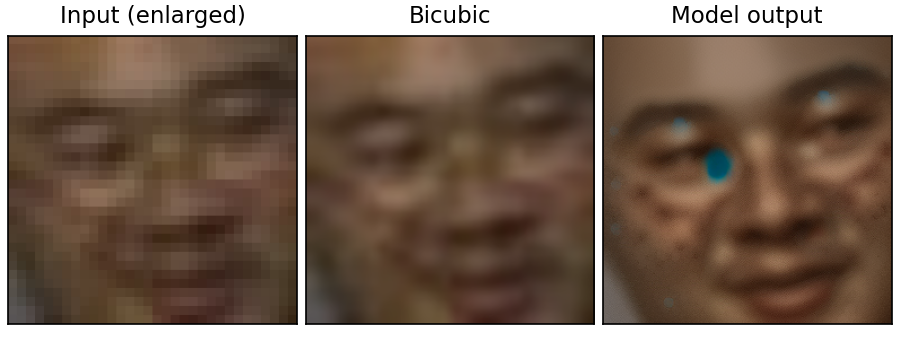
Problem shown: Visible artifacts: blue blobs and speckle painted onto the face
Dataset: TinyFaceSR: InvSR
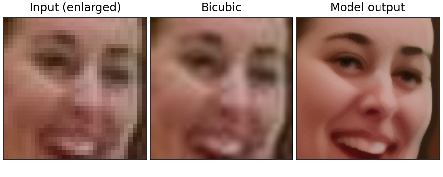
Problem shown: Smooth, plausible face; features redrawn, so identity cannot be verified
Dataset: TinyFaceSR: TADSR
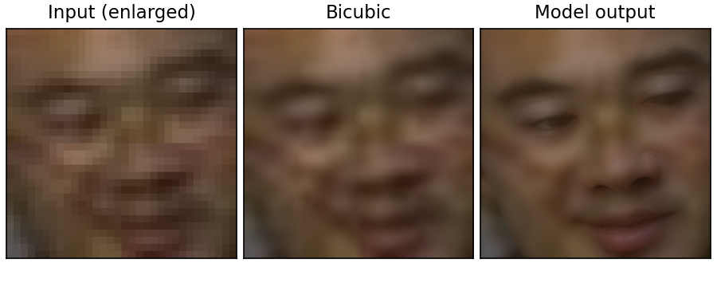
Problem shown: Almost no change: close to bicubic, little recovered
Dataset: TinyFaceSR: TADSR
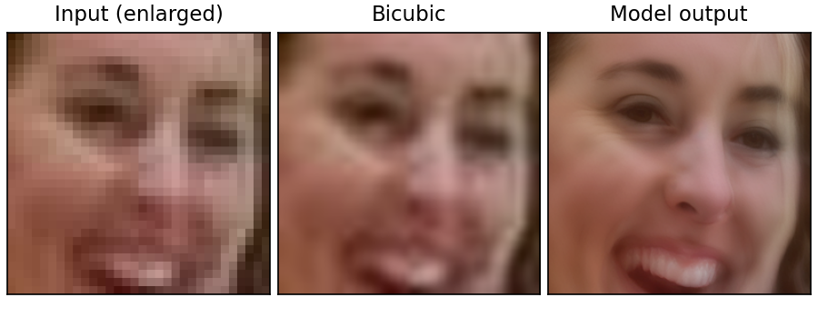
Problem shown: Eyes, mouth and skin redrawn with invented detail (mild)
Dataset: TinyFaceSR: OSDFace
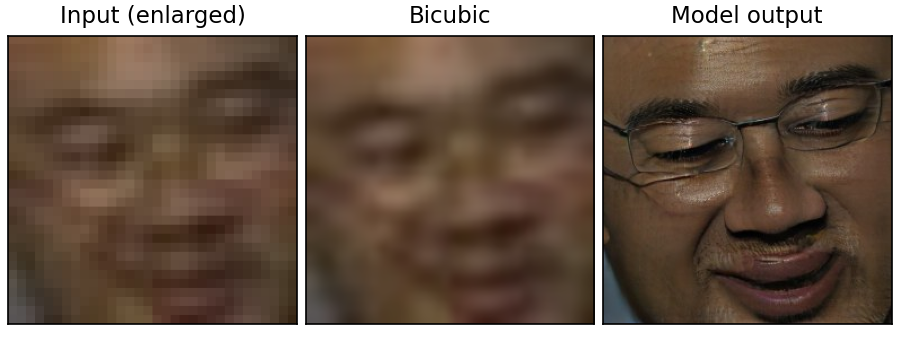
Problem shown: Identity hallucination: glasses and stubble added that the crop does not show
Dataset: TinyFaceSR: OSDFace
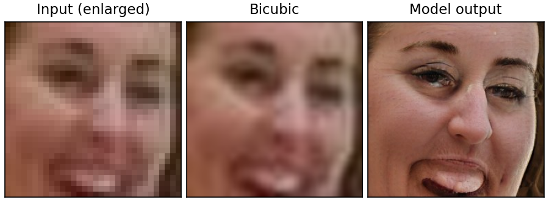
Problem shown: Identity hallucination: invented skin texture, eyes and exaggerated mouth
Dataset: SurvFaceSR: InvSR
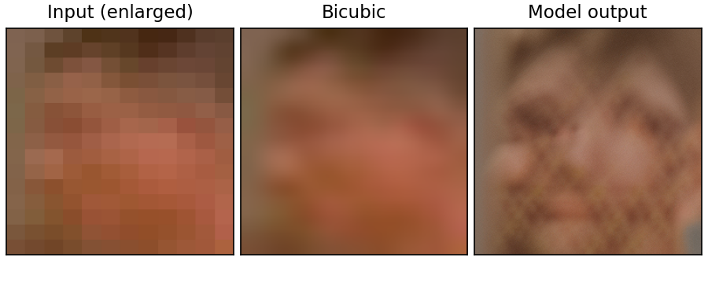
Problem shown: Artifact: repeating checkerboard texture on a 12x15 px blur
Dataset: SurvFaceSR: InvSR
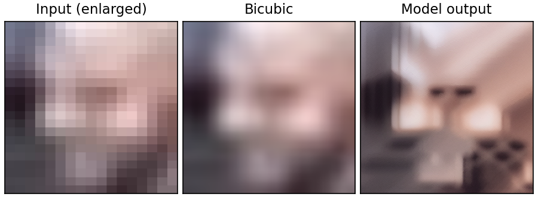
Problem shown: Non-face content hallucinated: a room-like scene instead of a face
Dataset: SurvFaceSR: TADSR
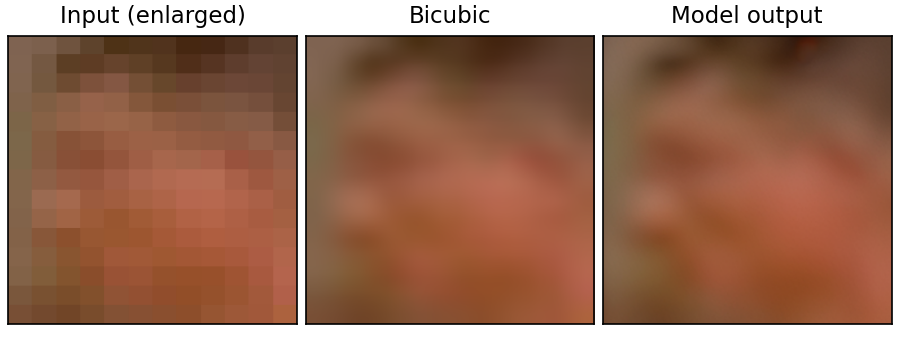
Problem shown: No real recovery: output nearly identical to bicubic
Dataset: SurvFaceSR: TADSR
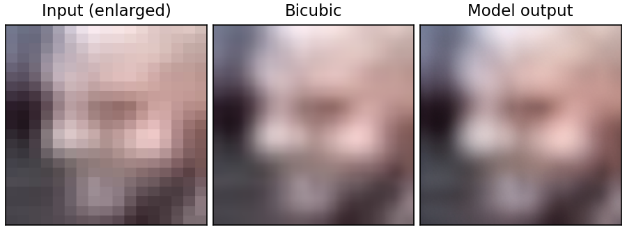
Problem shown: No real recovery: output nearly identical to bicubic
Dataset: SurvFaceSR: OSDFace
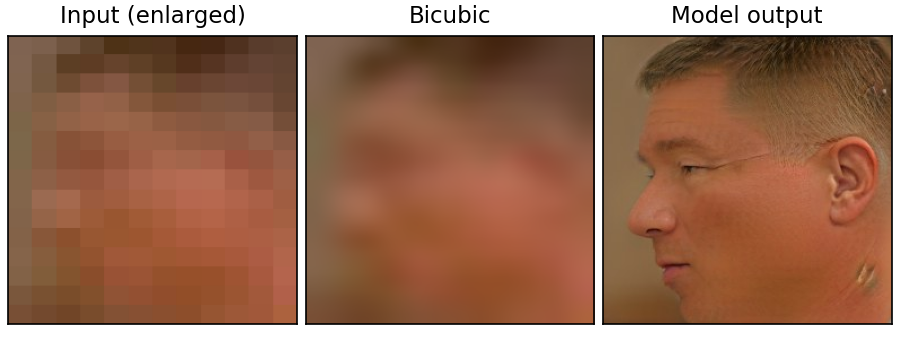
Problem shown: Identity hallucination: a sharp side-profile face invented from a 12x15 px blur
Dataset: SurvFaceSR: OSDFace
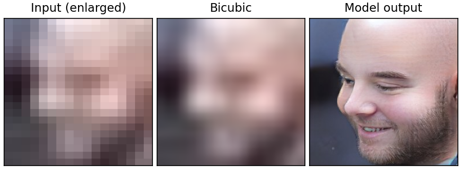
Problem shown: Identity hallucination: a sharp bearded man invented from a 17x21 px blur
Dataset: LFW (10 px synthetic)SR: OSDFace
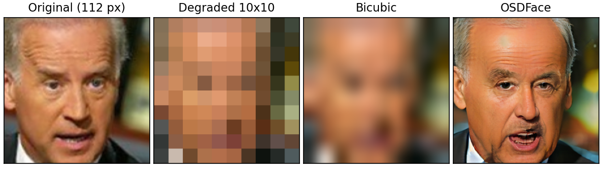
Problem shown: Partial identity drift: gaze, expression and face details differ from the original
Dataset: LFW (10 px synthetic)SR: OSDFace
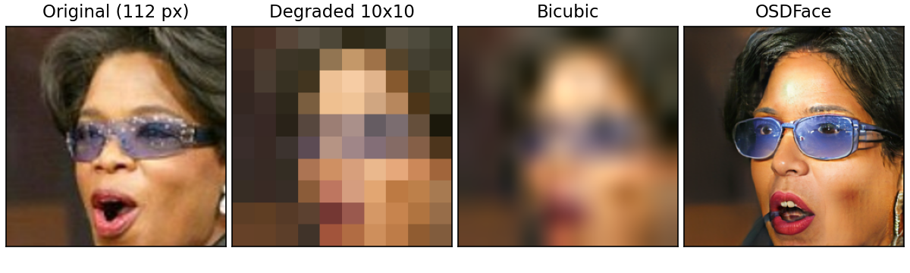
Problem shown: Identity hallucination: a visibly different face; glasses and skin tone redrawn
Sources: every number in this brief comes from REPORT_phase0.md to REPORT_phase3.md and the result files in outputs/sr/results/ of the project repository. No new experiments were run for this brief.